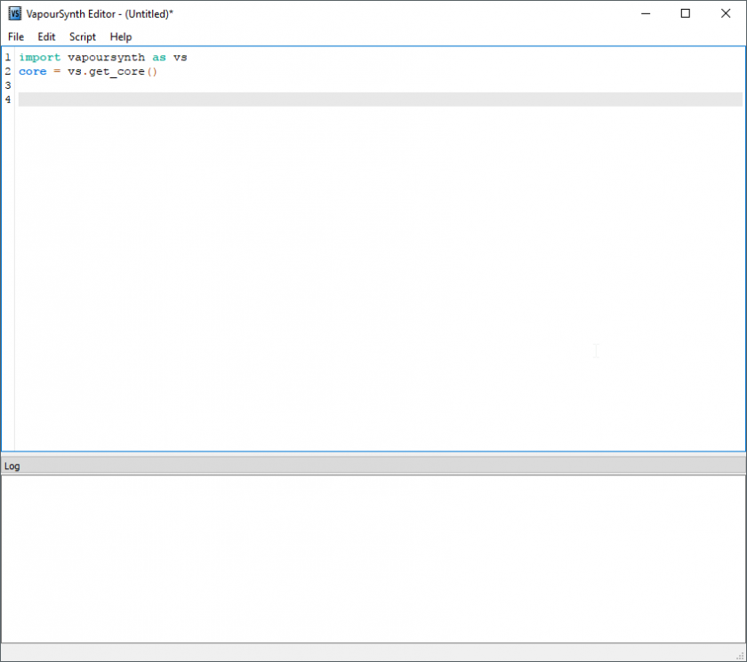
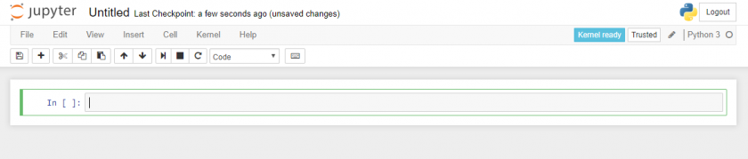
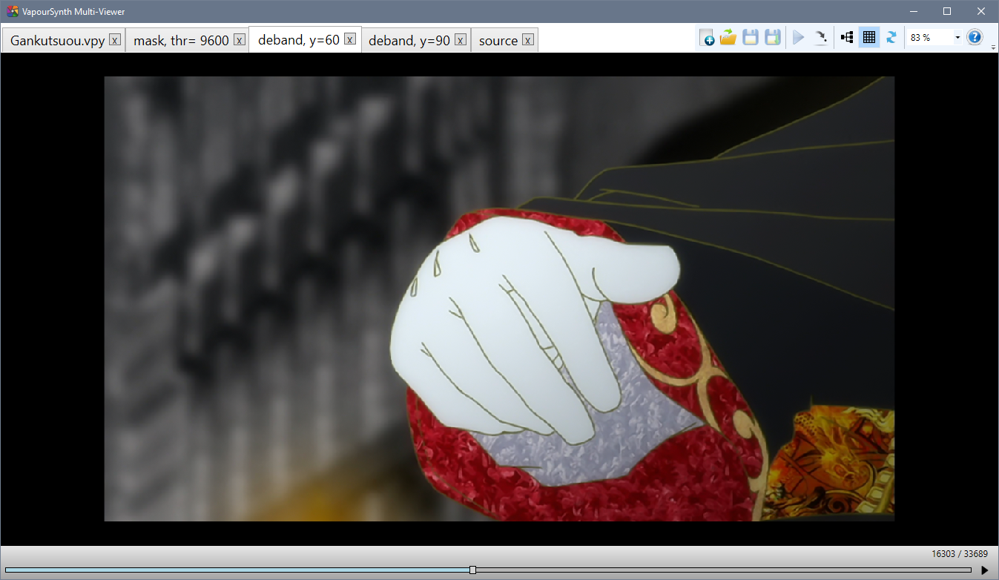
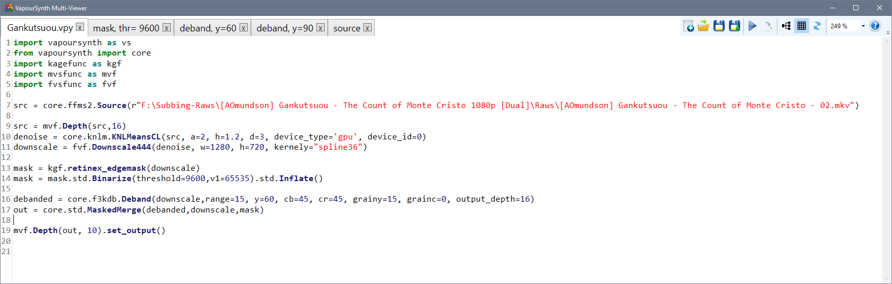

While the term "encoding" originally just referred
to the opposite of decoding—that is,
compressing raw video with a video codec—the term
has a broader meaning in the context of fansubbing.
Here, "encoding" includes the entire process
from receiving the source video until the final release.
Usual steps are processing or filtering
of the original video to remove defects,
compressing the video in a way that does not generate new artifacts,
transcoding audio to the desired format,
and muxing video,
audio,
subtitles,
fonts,
and other attachments into a container,
such as mkv.
Each of these steps requires different tools which will be listed and
explained in the following paragraphs.
It is assumed that you already have a source video at this point,
so software like torrent clients,
Perfect Dark,
Share,
or even FileZilla will not be covered.
If you don't have a reliable way to get raws
and if your group doesn't provide them,
try finding a source first.
Private bittorrent trackers like u2
or SkyeySnow are good starting points.
Processing and Filtering
The Frameserver
In order to process your source video
(which will be called "raw" throughout this chapter),
you need to import it into a so-called "frameserver",
a software that is designed to process a video frame-by-frame,
usually based on a script that defines various filters
which will be applied to the video.
Currently, only two widely-known frameservers exist:
AviSynth and VapourSynth.
While many (especially older) encoders still use AviSynth,
there is no reason to use it
if you're just starting to learn encoding.1
Most AviSynth users only use it because
they have years of experience and
don't want to switch.
Since this guide is aimed towards new encoders,
and the author has no qualms about imposing his own
opinions onto the host of people willing to listen,
the guide will focus on VapourSynth.
AviSynth equivalents are provided for certain
functions where applicable,
but the sample code will always be written for VapourSynth.
That being said, the installation of VapourSynth is quite easy.
It is strongly recommended to install the 64-bit version
of all tools listed here.
VapourSynth requires Python 3.8.x or newer
(which can be downloaded here).
VapourSynth Windows binaries can be found
here.
Linux users will have to build their own version,
but if you're on Linux,
you probably know how to do that.
During the installation,
you might be prompted to install the Visual C++ Redistributables.
Just select "Yes" and the installer will do it for you.
And that's it.
You can test your VapourSynth installation by opening the
Python shell and typing:
>>> import vapoursynth
If the installation was not successful,
you should receive an error that reads:
Traceback (most recent call last):
File "", line 1, in <module>
ImportError: No module named 'vapoursynth'
In that case,
make sure your current Python shell is the correct version
(Python version as well as architecture),
try restarting your PC,
reinstall VapourSynth,
or ask for help.
Plugins
In addition to VapourSynth’s core plugins,
community-created scripts and plugins
can be installed to extend the functionality of the frameserver.
These are usually more specific than the universally usable core plugins
or they are collections of wrappers and functions.
A (non-exhaustive) list of plugins and scripts is available in the
official documentation.
Additionally, an extensive database of VapourSynth plugins and scripts
is available at VSDB.
VSDB also offers a GUI for vsrepo,
VapourSynth’s official package manager,
and a plugin pack (labeled “Portable FATPACK”)
that bundles most popular plugins,
scripts, and VS-related applications into one archive
for ease of download and installation.
An alternative to the latter is eXmendiC’s encode pack,
which contains a lot of encoding-related applications and scripts,
on top of a broad collection of VapourSynth plugins and scripts.
However, the package is not maintained anymore,
and may in part include outdated software.
The Editor
Now that you have installed the frameserver,
you can start filtering the video.
But without an editor,
you have no means of previewing the results other than test encodes
or raw output into a file.
That's why editors exist.
They provide useful features such as autocompletion,
tooltips,
preview images,
and comparisons.
There are four editors that can be used to preview your
VapourSynth-Script.
VSEdit.
It is a small editor software that can run on your PC. It can be
downloaded
here.
It provides an easy and simple GUI to write your VapourSynth
scripts.
Image 2.1.1 - The main window of VSEdit.
While it seems to be unstable on some systems, its high performance
preview window offsets its problems.
Yuuno. While it is not an editor, Yuuno
is an extension to a Python-shell-framework that runs inside your
browser.
This increases latency, but it gives you a wider range of preview
related features while being more stable than VSEdit. It should be
noted that Yuuno natively supports remote access, as it is only an
extension for Jupyter Notebook.
Image 2.1.2 - A Jupyter Notebook.
VapourSynth Multi-Viewer.
Multi-Viewer is a very simple and elementary previewing tool.
While the text editing is vastly inferior to VSEdit’s,
and the preview lacks a lot of VSEdit’s advanced features,
its tab-based previewing functionality easily outclasses
VSEdit’s single preview window,
because it makes comparisons between different script versions
a lot more convenient and efficient.
In short: very useful for thorough comparisons and filter fine-tuning,
not so much for everything else.
Image 2.1.3 - VS Multi-Viewer’s editing window.Image 2.1.4 - VS Multi-Viewer’s preview window.
AvsPmod. This is the
editor for AviSynth. It is old and slow but stable. When you are
using AviSynth, you are limited to this editor. AvsPmod can handle
AviSynth and VapourSynth scripts, however, VapourSynth support was
an afterthought and is therefore experimental, unstable, and
"hacky".
Do not use AvsPmod for VapourSynth scripts unless you have a very
good reason!
Please rest assured that the author does not impose any editor on you.
Instead we will give callouts for some editors.
These will be completely optional.
Video Codecs
Once you are happy with the result of your filter chain,
you want to save the output to a file.
While it is possible to store the script's output as raw,
uncompressed pixel data,
that would result in hundreds of gigabytes of data for a single episode.
Because of this,
we use video codecs to compress the video.
Lossless compression will still result in very big files,
so we have to use lossy compression,
which means losing some information in the process.
As long as you're not targeting unreasonable bitrates
(say, 50 MB per 24 minute episode),
this loss of information should be barely noticeable.
This process can be quite difficult,
so there will be an entire page dedicated to it.
None of the encoders mentioned here need to be installed.
Just save the executable(s) somewhere for later.
For now, all you need to know is which codecs exist
and which encoders you want to use.
The codec used most commonly is h.264,
and the most popular h.264 encoder is x264.
The most recent builds can be found on VideoLAN's site.
Pick the most recent build for your operating system.
At the time of writing this,
win64's recent build is x264-r2935-545de2f.exe
from 25-Sep-2018.
(Notice: the 10-bit binaries are no longer separate from the 8-bit
as of 24 Dec 2017,
meaning the releases with -10b can be ignored)
You can also build it locally from the public repository.
It used to be that different versions,
namely kmod and tmod,
were required for certain encoding features
such as aq-mode 3.
However, most relevant features have been
added to the upstream x264 builds.
Because of this, kmod is now unmaintained.
tmod is still being updated with changes from new x264 versions,
and it provides some potentially useful parameters such as --fade-compensate
or --fgo (film grain optimization), as well as additional AQ algorithms
(aq2-mode, aq3-mode, and parameters for these),
which are generally regarded as useless for almost all sources.
The current tmod release can be downloaded from the github page.
A newer, more efficient alternative is HEVC,
with x265 being the most popular encoder.
It is still in active development
and aims for 20-50% lower bitrates with the same quality as x264.
It does have its flaws,
is a lot slower,
and not as widely supported by media players as x264,
but it can be a viable alternative,
especially if small files are important
and encoding time is of secondary importance.
Note that many groups will require you to use x264,
so ask your group leader before picking this encoder.
Other codecs, such as VP9,
are generally not used for fansubbing,
so they are not listed here.
The same is true for experimental codecs like Daala and AV-1.
Encoders made for distributed server encoding,
such as Intel's SVT-AV1 will also not be included.
Audio
Audio formats and how to handle them
Depending on the source you'll be working with,
you may encounter many different audio formats.
On Blu-rays,
you will most likely find audio encoded losslessly,
in the form of either DTS-HD Master Audio, Dolby TrueHD, or PCM.
DTS-HD MA and Dolby THD are proprietary codecs that use lossless compression,
while PCM is simply raw, uncompressed PCM data.
The usual way to handle these
is to re-encode them to other formats—either lossless or lossy,
depending on your taste.
But first, you need to decode them.
The recommended tool for that is FFmpeg.
You can find Windows builds and Linux packages
on FFmpeg's official site.
It doesn't need to be installed—you can just extract it somewhere.
But, since it is useful for many different tasks,
adding it to the system PATH is recommended.
When working with WEB and TV sources,
you will most likely have only lossy audio available.
The most common codecs here are AC-3, E-AC-3 and AAC.
Lossily compressed files should generally
not be re-encoded—the proper way to handle them
is to remux (i.e. copy) them to the final file.
Which codecs to use?
Once you have your lossless files decoded, you need to encode them.
Depending on your taste, you can choose a lossy or lossless codec.
The two most widely accepted codecs in fansubbing community are FLAC (lossless)
and AAC (lossy), but recently opus (also lossy) is gaining some popularity, too.
The recommended encoder for FLAC is the official one.
Download Windows builds from xiph's website.
Most Linux distributions should have FLAC in their package repositories.
The recommended and most widely used AAC encoder is qaac,
available on its official site.
Nero and Fraunhofer FDK aren't really that much worse,
so you can use them if you really want.
Other AAC encoders are discouraged,
since they provide inferior results.
There is also opus, which is gaining some popularity recently.
It is currently the most efficient lossy codec,
and it's completely FOSS if you're into that.
The recommended opus encoder is the official one,
contained in the opus-tools package.
Just as with video,
these encoders don't need to be installed.
Qaac will require some configuration, tho.
Other codecs are generally not recommended.
Formats like Monkey's Audio and TAK provide very little gain over FLAC,
while not being as widely supported,
and—in the case of TAK—closed source.
DTS-HD MA and Dolby THD are much less efficient than FLAC,
and are also closed source.
MP3 is simply obsolete,
and Vorbis has been superseded by opus.
DTS and AC-3 provide even worse compression than MP3,
and don't have any reasonable, free encoders.
In short—don't bother,
unless you really have to, for some reason.
Lossless or lossy?
This is entirely dependent on you.
Some people like the idea of having a (theoretically)
perfect copy of the master audio file,
don't mind the increase in size,
and state that lossless is the only way to go when archiving.
Others prefer smaller file sizes,
knowing that the difference—assuming high enough bitrate—won't
be audible anyway.
And they both have a point.
So, do some ABX testing and decide for yourself.
MKVToolNix
You probably have at least three files now—that being the video,
audio,
and subtitles—and you need to combine all of them into a single file.
This process is called muxing.
MKVToolNix is used to mux all parts of the final output
into an mkv container.
Most people use MKVToolNix GUI,
which provides a graphical user interface to mux video,
audio,
chapters,
fonts,
and other attachments
into an mkv file.
Installation instructions for virtually any platform
can be found on their website.
It is possible to use other containers,
but Matroska has become the standard for video releases
due to its versatility and compatibility.
1. It should be noted that the author strongly disagrees with this sentiment. The two have a lot in common, and any capable AviSynth encoder could reach a similar level in Vapoursynth within a few months, maybe even weeks. At least I'm honest, okay? ↩